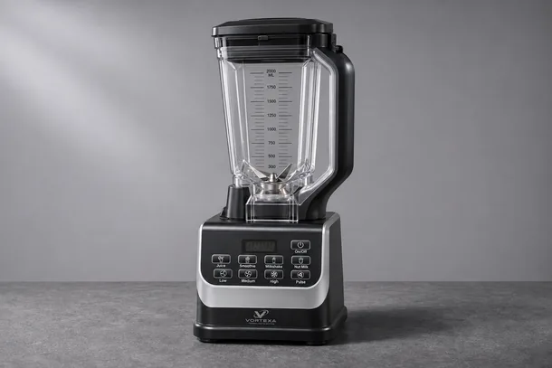
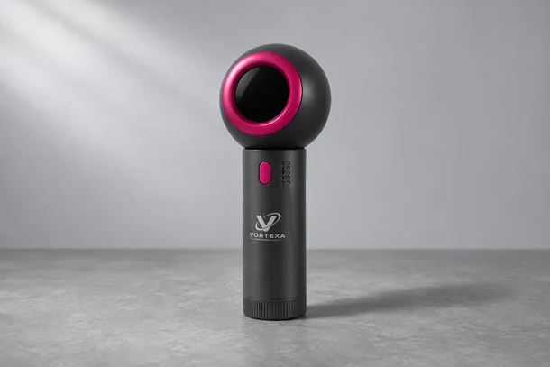

Сұрақтар мен жауаптар
Жауап таппадыңыз ба? Бізге жазыңыз.
Сұрақ қою Тапсырысты қалай беруге болады? Модель бетінде «Сатып алу» түймесін басып, себетте тапсырыс беріңіз: аты-жөні, телефон, қала және мекенжай. Тіркелу қажет емес.
Маған қашан қоңырау шалады? Менеджер жұмыс уақытында [күн сайын, 9:00–21:00] [15 минут] ішінде қоңырау шалады. Тапсырыс түнде келсе, таңертең хабарласамыз.
Қалай төлеуге болады? Төлем тәсілін менеджер телефонмен келіседі, тауарды алған кезде төлейсіз. Сайтта картамен және Kaspi арқылы төлеу кейін қосылады. Жеткізу және төлем
Жеткізу қанша уақыт алады? Алматы бойынша [1–2 күн], ірі қалаларға [2–4 күн], басқаларына [4–7 күн]. Қалалар бойынша мерзім
Тапсырыстың күйін қайдан көруге болады? «Тапсырыс күйі» бетінде тапсырыс нөмірі мен телефонды енгізіңіз.
Сатып алған затты қайтаруға бола ма? Иә, [14 күн] ішінде, егер техника қолданылмаса және қорабы, жиынтығы мен чегі сақталса. Қайтару шарттары
Техника бұзылды. Не істеу керек? «Кепілдік және сервис» бетінде өтінім қалдырыңыз. Кепілдік алған күннен бастап [12 ай] .
Сериялық нөмірді қайдан табуға болады? [Корпустың астындағы жапсырмада және қорапта.] Ол кепілдік үшін керек.
Қазақша нұсқаулық бар ма? Орыс және қазақ тіліндегі PDF нұсқаулықтар [кейін қосылады]. Әзірге әр модель бойынша негізгі мәліметтер төменде.
Модельдер бойынша нұсқаулық
[«Қалай бастау керек» қадамдары тауар карточкалары бойынша жазылған. Жариялау алдында модель төлқұжатымен салыстыру керек.] Нұсқаулықтар PDF форматында [кейін] қосылады.
Модельге өту Модельді таңдаңыз Шыны шәйнек KEGS5803D-GS Стационарлық блендер HB003B Су сорғысы MKN-CSQ818 Ауа ылғалдандырғыш T-2215-ZN LCD Ауа ылғалдандырғыш T-606 Жиналмалы желдеткіш SS-056 Сымсыз шаңсорғыш A7 Көлік шаңсорғышы A2 Шаш кептіргіш HCD1002-CE Киім кептіргіш C-PCD-2 Түйіршік тазалағыш AR-008
Негізгісі
Көлемі 1,7 л
Қуаты 2200 Вт
Корпус Шыны
Контроллер Strix VQ Қалай бастау керек Алғаш қолданар алдында толық шәйнек суды қайнатып, төгіп тастаңыз. Тағы бір рет қайталаңыз. Суды шыныдағы MIN және MAX белгілерінің арасына құйыңыз. Шүмектегі сүзгіде қақ пайда болғанда, оны алып, жуыңыз.

Негізгісі
Құмыра көлемі 2 л
Автобағдарламалар 4
Жылдамдықтар 3
Импульстік режим Pulse Қалай бастау керек Алғаш қолданар алдында құмыра мен қақпақты жуыңыз. Өнімдерді салып, қақпақты жабыңыз да, құмыраны тұғырға қойыңыз. Бағдарламаны таңдаңыз: Juice, Smoothie, Milkshake немесе Nut Milk. Қысқа импульс үшін Pulse бар.
Негізгісі
Су мөлшері 0,1 / 0,2 / 0,3 / 0,5 / 0,8 / 1,5 л
Аккумулятор кернеуі 3,7 В
Қосқышы USB Type-C
Қуаттау параметрлері 5 В / 1 А Қалай бастау керек Сорғыны USB Type-C арқылы 5 В / 1 А қуатпен зарядтаңыз. Түтікті бөтелкеге салып, сорғыны мойнына кигізіңіз. Мөлшерді таңдаңыз: 0,1 / 0,2 / 0,3 / 0,5 / 0,8 немесе 1,5 л.
Негізгісі
Бак көлемі 4 л
Су шығыны 280 мл/сағ дейін
Бөлме ауданы 25–40 м²
Ылғалдандыру тәсілі Ультрадыбыстық Қалай бастау керек Бакқа бөлме температурасындағы таза су құйыңыз. Су үстінен құйылады. Ылғалдандырғышты қосып, режимді панельден немесе пультпен таңдаңыз. Температура мен ылғалдылық дисплейде көрінеді. Су таусылғанда ылғалдандырғыш өзі өшеді. Су құйып, қайта қосыңыз.
Негізгісі
Бак көлемі 4 л
Ылғалдандыру деңгейлері 3
Басқару Қашықтан басқару пульті
Режимдер Таймер, түнгі режим Қалай бастау керек Бакты тұғырынан алып, таза су толтырыңыз. Бакты орнына қойып, қосыңыз да, пультпен үш деңгейдің бірін таңдаңыз. Хош иісті майды тек бөлек орынға тамызыңыз, су багына емес.
Негізгісі
Жылдамдықтар 3
Қуаттау USB Type-C
Құрылымы Жиналмалы
Дисплей Цифрлық Қалай бастау керек Алғаш қосар алдында желдеткішті жиынтықтағы Type-C кабелімен зарядтаңыз. Басын топса арқылы керекті бұрышқа ашыңыз. Түймемен үш жылдамдықтың бірін таңдаңыз. Жылдамдық пен заряд дисплейде көрінеді.
Негізгісі
Қуаты 350 Вт
Жұмыс режимдері 3
Түрі Тік және қол шаңсорғышы
Қуат көзі Алынбалы аккумулятор Қалай бастау керек Алғашқы тазалау алдында алынбалы аккумуляторды толық зарядтаңыз. Еденге шаңсорғышты түтік пен щеткамен жинаңыз. Жиһаз бен сөрелерге түтікті шешіңіз. Тазалаудан кейін контейнерді босатып, алдын ала сүзгі мен HEPA сүзгісін тексеріңіз.
Негізгісі
Қуаты 120 Вт
Аккумулятор 2000 мА·сағ
Режимдер Сору және үрлеу
Жабдық Ауыспалы саптамалар Қалай бастау керек Алғашқы тазалау алдында аккумуляторды зарядтаңыз. Орындықтар арасындағы саңылауларға жіңішке ұзын саптаманы кигізіңіз. Ойықтардағы шаңды алдымен үрлеу режимімен шығарып, содан кейін сорып алыңыз.
Негізгісі
Қуаты 1600 Вт
Температура режимдері 4
Қозғалтқыш Щеткасыз, BLDC
Айналу жиілігі 110 000 айн/мин Қалай бастау керек Шаш кептіргішті 220–240 В желіге қосыңыз. Төрт температура режимінің бірін таңдаңыз. Саптаманы магнитті сақинаға тақаңыз: толқын үшін диффузор, жеке бұрымдар үшін концентратор.
Негізгісі
Кептіру тәсілі Жылы ауа
Таймер Бұрамалы
Құрылымы Жиналмалы Қалай бастау керек Қаңқасын жинап, мата қапты кигізіңіз. Киімді ішіне іліп, қапты алдынан жабыңыз. Таймерді керекті уақытқа, 180 минутқа дейін бұраңыз.

Негізгісі
Пышақтар 6
Режимдер 3
Жұмыс уақыты 90 мин дейін
Қуаттау USB Қалай бастау керек Тазалағышты USB арқылы зарядтаңыз. Матаға сай үш режимнің бірін таңдаңыз. Тормен матаның бетінен баспай жүргізіңіз. Түйіршіктер корпус ішіне жиналады, жұмыстан кейін бөлігін тазалаңыз.